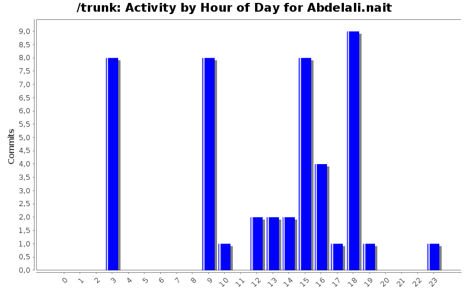
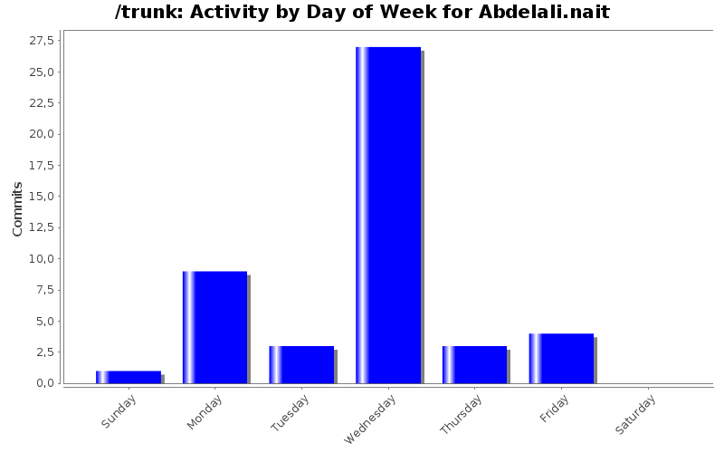
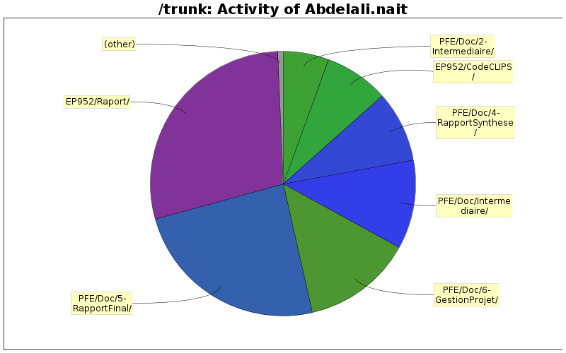

| Directory | Changes | Lines of Code | Lines per Change |
|---|---|---|---|
| Totals | 47 (100.0%) | 9584 (100.0%) | 203.9 |
| EP952/Raport/ | 8 (17.0%) | 2757 (28.8%) | 344.6 |
| PFE/Doc/5-RapportFinal/ | 2 (4.3%) | 2319 (24.2%) | 1159.5 |
| PFE/Doc/6-GestionProjet/ | 1 (2.1%) | 1285 (13.4%) | 1285.0 |
| PFE/Doc/Intermediaire/ | 1 (2.1%) | 1047 (10.9%) | 1047.0 |
| PFE/Doc/4-RapportSynthese/ | 2 (4.3%) | 827 (8.6%) | 413.5 |
| EP952/CodeCLIPS/ | 8 (17.0%) | 751 (7.8%) | 93.8 |
| PFE/Doc/2-Intermediaire/ | 1 (2.1%) | 540 (5.6%) | 540.0 |
| PFE/Simulation Aréna/Version 1 ( Simple )/ | 11 (23.4%) | 58 (0.6%) | 5.2 |
| PFE/Presentation/ | 4 (8.5%) | 0 (0.0%) | 0.0 |
| PFE/Doc/Images/ | 1 (2.1%) | 0 (0.0%) | 0.0 |
| PFE/Doc/Articles/ | 1 (2.1%) | 0 (0.0%) | 0.0 |
| EP952/Image/ | 7 (14.9%) | 0 (0.0%) | 0.0 |

+ Prise en compte des remarques de Mme Frydman
0 lines of code changed in 1 file:
+ Modification du diapos
0 lines of code changed in 1 file:
+ Ajout du présentation Abdelali
0 lines of code changed in 1 file:
+ Ajout du fichier presentation.pptx
0 lines of code changed in 1 file:
+- Ajout de l'introduction
1285 lines of code changed in 1 file:
+ correction
250 lines of code changed in 1 file:
+- Reclecture et modification du AlgoMarcheur.lyx (rapport Final)
n'hesitez à faire une relecture ... ;)
2069 lines of code changed in 1 file:
-+ Modification présentation STMicroeletronics
186 lines of code changed in 1 file:
-+ Relecture / correction des fautes d'orthographe
Fabien je t'invite à refaire une relecture stp ;).
641 lines of code changed in 1 file:
+ Ajout de la deuxième itération du gestionPojet.lyx
540 lines of code changed in 1 file:
+- Modification de EP.Bat Version Finale
24 lines of code changed in 1 file:
+ Dossier final EP , n'oublie pas le .bat (stp)
1569 lines of code changed in 5 files:
+ Ajout de l'image Execustion2.PNG
0 lines of code changed in 1 file:
+ Ajout de l'image Execustion.PNG
0 lines of code changed in 1 file:
+ Version Finale du syteme expert
0 lines of code changed in 1 file:
+ Version finale du Syteme Expert
36 lines of code changed in 1 file:
+ Systeme expert
1239 lines of code changed in 7 files:
+ Finalement le system expert est pret ;)
573 lines of code changed in 1 file:
+ Ajout de la ligne du plan de contrôle optimisé
1047 lines of code changed in 1 file:
+ première Version du programme à completer après
Abdelali et Jaafar
1 lines of code changed in 1 file:
(11 more)